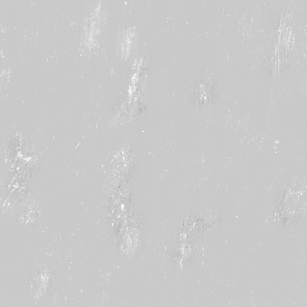
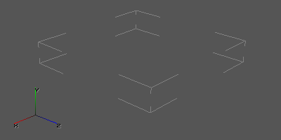

File Formats
This section describes the extensions that are found in the game files and the SDK.
General
| Extension | Description |
|---|---|
| .log | Event log. It contains records of program start, operation and termination |
| .scop | Save file |
| .scoc | Save file |
| .xrdemo | Recording camera flyover (demo). Created in the game with a console command. |
| .ogm | The video format used by the game engine. |
| .ogg | The sound format used by the game engine. |
Configuration and script files
| Extension | Description |
|---|---|
| .ltx | Configuration file, custom ini-like format |
| .script | Game script |
| .xml | Carry in text format data related to in-game text, UI element placement, and characters and information within the game world |
| .seq | Text file containing a description of the frame sequence in the 2D animation |
| .efd | Table of AI heuristic parameters, contains constants for fine-tuning A-Life. They are used as input parameters in scripts. |
Textures
| Extension | Description |
|---|---|
| .bump | Normal map in A(BGR) format |
| .bump# | File that fixes DXT compression errors in .bump |
| .dds | Graphic file used by DirectX to store textures |
| detail_map.dds | Same as a regular .dds texture, needed as an extra map in a .thm |
| .tga | A bitmap graphics format with support for color depth of 1-32 bits per pixel, alpha channels, and RLE compression. Used as a source format. |
| .thm | They are used to set the parameters of textures - bump, detail, and more. |
Shaders
| Extension | Description |
|---|---|
| .cs | Compute shader |
| .gs | Geometry shader |
| .vs | Vertex shader |
| .ps | Pixel shader |
| .s | Script shader. LUA version of engine blenders |
| .ppe | Postprocess file format. Color-noise effects of the actor's screen |
Models
| Extension | Description |
|---|---|
| .dm | Effect of a dynamic weather environment (e.g., rain or lightning) |
| .object | These files are intended for the X-Ray SDK to store 3D content in its original, uncompressed, lossless form. They are source files that store information before compilation into other game compressed formats. |
| .ogf | Compiled objects |
| .bones | Skeleton bone data files |
| bone_parts.* | Bone part description file for an object/NPC |
Animations
| Extension | Description |
|---|---|
| .anm | A set of coordinates, which works as an animation of the actor's camera movement. It is also used for anomalies, which need to be given a path. |
| .skl | Skeletal animation |
| .skls | Skeletal animations(.skl) in a container |
| .omf | A specialized S.T.A.L.K.E.R. game format containing animations. This is a separate dedicated file used in conjunction with .ogf models. Was created in order to optimize process when some different models use the same list of animations. |
Archives and Resource Packages
| Extension | Description |
|---|---|
| .db | archive of game resources. Used in late builds and the final version of the game, has several options (db."number", db."letter"). |
| .xr | resource library. Contains resources such as particles, shaders, etc. in a packed format. |
Game level
| Extension | Description |
|---|---|
| .err | Contains information about geometry errors during level compilation |
| level | File with general information about the game location (light sources, object names, texture and shader names, sectors and portals). Created by xrLC during compilation. Opened only by the game. |
| .prj | Level precompilation file |
| .ai | AI location grid. Created by xrAI when compiling. Opened only by the game. |
| .cform | Geometry for calculating collisions. Calculated by the level compiler. Contains a solid map structure. All tangible objects with materials live here. Because of this, the game knows with what sound and property objects should react when they are hit by bullets or walked on |
| .details | Detailed objects (grass, cigarette butts, construction debris) on the level. Created through LevelEditor SDK at compile time. |
| .env_mod | local environment modifiers (environment), set areas on the location with lighting different from the main weather cycle. |
| .fog_vol | Volumetric fog |
| .game | Coordinates of the player's spawn in the multiplayer game. Outdated file. |
| .geom | Contains vertices (position, normals, texture coordinates, etc.), indices, and information for smooth geometry detail. |
| .geomx | It contains only geometry. In the renderer it is used in the shadow rendering passes, due to the fact that there is less information - loading data into the buffers - faster. |
| .gtc | Cross table of correspondence between the location graph and the AI grid. It is created when compiling the map in LE KFK (xrAI). |
| .hom | Mapping of hierarchical cutoffs |
| .level | List of SDK scene objects |
| .lights | Light sources for xrLC |
| .ps_static | Particle systems. Flies, steam from pipes, etc. |
| .graph | Global graph of AI navigation. Used, among other things, for moving AI objects outside the active level. |
| .spawn | A file storing spawn data. |
| .snd_env | Volumetric sound sources. |
| .snd_static | Static point sources of sound. Sound of flies, etc. |
| .som | Geometry for calculating sound propagation. |
| .wallmarks | Decals. Bloodstains, faction emblems on walls, etc. Used for the compiled level. |
Starting here, the details of the formats are written. You are encouraged to use links from the tables above to jump directly to the format you are interested in
Binary files
About
This article is an introduction to binary files.
Before reading the other articles in the "File Formats" category, you should read this one first.
Structure
In binary files, bytes are represented in reverse order.
For example, the number 0x12345678 in a file would look like this: 78 56 34 12.
Data types
Let's introduce the notation of data types.
These notations will be used in other articles.
| Designation | Type | Range | Size (bytes) |
|---|---|---|---|
| B | Integer | 0 ... 255 | 1 |
| H | Integer | 0 ... 65535 | 2 |
| I | Integer | 0 ... 4294967295 | 4 |
| i | Integer | -2147483648 ... 2147483647 | 4 |
| f | Fractional number | - | 4 |
| s | String | - | - |
In some files a value may not be stored in the whole byte, but only part of it (e.g. 4 bits).
As a result, one byte will store two values.
In articles about binary files, sizes will be specified either in bits or in bytes.
Strings necessarily have a null byte at the end, which indicates that the string has ended. For example: "test_string0x0".
As a result, the length of the string is equal to the number of characters in it + 1 (null byte).
Blocks
In X-Ray, some binary files are in RIFF format.
Such files have blocks (also called chunks or sections).
A block is binary data with a header.
Block structure
| Data | Type |
|---|---|
| Identifier | H |
| Compression | H |
| Content size (bytes) | I |
| Content | Binary data |
You can see from the identifier what is stored in a particular block.
If the compression is set to 0x0000, the block is uncompressed, and if it is set to 0x8000, the block is compressed by the Huffman method.
You can use a program from xray_re_tools (trunk\garbage\lzhuf\lzhuf.c) to decompress compressed blocks.
In the files of the final version of the game most blocks are uncompressed.
The size of the block content indicates only the number of bytes of data (not including identifier, compression and size bytes).
Binary block data can be represented by nested blocks.
Sources
.anm (Animated paths)
About
A set of coordinates, which works as an animation of the actor's camera movement. It is also used for anomalies, which need to be given a path.
Technical information
- Order of rotation: YXZ
Interpolation types
- TCB
- BEZIER_2D
- BEZIER_1D
- LINEAR
- HERMITE
Programs editing this file
bump#.dds
About
Corrects DXT compression errors in .bump
Technical information
Format
- RGB - Error correction for normal map (bump.dds) - Not necessary if you're using good quality normal map. It's generated with SDK
- A - height map; used for parallax, if the use of it was turned on when setting up the texture
The engine currently supports the following compressions
- DXT5
- BC7
Can be generated by
bump.dds
About
The bump map is a regular normal map in A(BGR) format (typical for DXT5_nm compression format). The developers used this order for a very simple reason - DXT compression "spoils" the texture much less, since the alpha channel is not subjected to compression and remains almost in its original form.
Technical information
Format
- R - Glossiness (Glossiness, aka inverted roughness. It works best in stalker, and allows for using better BRDF)
- G - Normal Z (Unused in Anomaly 1.6.0)
- B - Normal Y (DIRECTX format.)
- A - Normal X
The engine currently supports the following compressions
- DXT5
- BC7
Can be generated by
.cform (Collision Form)
About
Contains a solid map structure. All tangible objects with materials live here. Because of this, the game knows with what sound and property objects should react when they are hit by bullets or walked on
Technical information
- Format version: 4
The file consists of one block, which contains the following
| Value | Size | |
|---|---|---|
| Version | 4 for build 1537 and higher | DWord(4) |
| Number of vertices | - | DWord(4) |
| Number of triangles | - | DWord(4) |
| BBox diagonal | - | 24 bytes |
| vertices | - | - |
| triangles | - | - |
BBox
BBox describes the entire map, including absolutely all static objects. The BBox diagonal is represented by two vertices that have the same format as the others:
| Coordinates | Offset | Size |
|---|---|---|
| X coordinate | 0 | Single(4) |
| Z coordinate | 4 | Single(4) |
| Y coordinate | 8 | Single(4) |
Triangle
| Offset | Size | |
|---|---|---|
| First Index | 0 | DWord(4) |
| Second index | 4 | DWord(4) |
| Third index | 8 | DWord(4) |
| Material ID (14 bits) and flags in the two highest bits | 12 | Word(2) |
| Sector number | 14 | Word(2) |
Programs editing this file
Sources
.dds (DirectDraw Surface)
About
DDS is most often used to store textures and is used in many 3D applications, as well as in modern 3D games. It allows you to store textures both in compressed and uncompressed form.
Technical information
Format
- RGB - Diffuse colour
- A - Alpha (Used for translucent/transparent shaders like glass/grass)
The engine currently supports the following compressions
- DXT1
- DXT5
Programs editing this file
- Any program that works with .dds files (Example: Paint.net or GIMP)
detail_map_name_(with bump or bump#).dds
About
Same as a regular .dds texture, needed as an extra map in a .thm
Technical information
The same as the .dds. But overlaid on top of an existing texture, for more detail
Example:

Programs editing this file
- Any program that works with .dds files (Example: Paint.net or GIMP)
.details
About
Detailed objects (grass, cigarette butts, construction debris) on the level
Technical information
- Format version: 3
General structure - file blocks
It consists of three RIFF sections (blocks):
| Block ID | Size (bytes) | Description |
|---|---|---|
| 0x0 | 24 | headline |
| 0x1 | - | object models (in .dm format) |
| 0x2 | - | table of 2x2 meter cells, setting the density and species diversity of objects on the map |
Block order in version 3: 0x1, 0x2, 0x0
One cell (slot) is a parallelepiped.
The dimensions of all cells along the X and Z axes are the same and equal to 2 meters.
The height of the slot (the dimensions of the parallelepiped along the Y axis) in all the slots is individual.

slot in the Level Editor
Blocks
Block 0x0 (header)
| Type | Description |
|---|---|
| I | format version |
| I | number of dm models in the file |
| i | offset of the table cells along the X axis |
| i | offset of the table cells along the Z axis |
| I | the number of table cells on the X axis |
| I | the number of table cells on the Z axis |
Block 0x1 (meshes)
A block consists of nested blocks.
The nested block identifier is the mesh index of the detailed object.
Nested block data is a mesh in .dm format
Block 0x2 (slots/cell table)
The block stores cells (slots).
The slots in this block are written alternately.
Up to four meshes of detailed objects can be attached to each slot.
The mesh index of a detailed object can be in the range [0 ... 62] (63 is no mesh).
One slot's data is stored in 16 bytes (128 bits), which store the following:
| Size (in bits) | Description |
|---|---|
| 12 | Coordinate of the bottom edge of the slot on the Y axis (this value should be multiplied by 0.2 meters) |
| 8 | Height of the slot (this value should be multiplied by 0.1 meter) |
| 6 | Identifier of the first mesh of vegetation |
| 6 | Identifier of the second mesh of vegetation |
| 6 | Identifier of the third mesh of vegetation |
| 6 | Identifier of the fourth mesh of vegetation |
| 4 | Shade from the sun |
| 4 | Hemi lighting |
| 4 | Red component of static light sources |
| 4 | Green component of static light sources |
| 4 | Blue component of static light sources |
| 4 | Density of the first mesh in the left front corner of the slot |
| 4 | Density of the first mesh in the right front corner of the slot |
| 4 | Density of the first mesh in the left rear corner of the slot |
| 4 | Density of the first mesh in the right rear corner of the slot |
| 4 | Density of the second mesh in the left front corner of the slot |
| 4 | Density of the second mesh in the right front corner of the slot |
| 4 | Density of the second mesh in the left rear corner of the slot |
| 4 | Density of the second mesh in the right rear corner of the slot |
| 4 | Density of the third mesh in the left front corner of the slot |
| 4 | Density of the third mesh in the right front corner of the slot |
| 4 | Density of the third mesh in the left rear corner of the slot |
| 4 | Density of the third mesh in the right rear corner of the slot |
| 4 | Density of the fourth mesh in the left front corner of the slot |
| 4 | Density of the fourth mesh in the right front corner of the slot |
| 4 | Density of the fourth mesh in the left rear corner of the slot |
| 4 | Density of the fourth mesh in the right rear corner of the slot |
As you can see from the table, each slot has 16 density values.
Each of the four meshes has four density values (for the four corners of the slot).
The density values within a slot are interpolated from the density values of the slot corners.
Let us denote the densities as follows:
-
a0 - density for the left front corner of the slot
-
a1 - density for the right front corner of the slot
-
a2 - density for the left rear corner of the slot
-
a3 - density for the right rear corner of the slot
If you look at the slot from above, the densities will look like this:

Mesh density, slot view from above
Restrictions are imposed on the position of slots along the Y axis.
The lower limit is -200 meters.
And the allowed range: from -200 meters to 619 meters (0.2 * 4095 - 200).
The maximum height of the slot (parallelepiped) is: 25.5 (0.1 * 255).
The upper boundary of the slot is equal to: the lower boundary + the height of the slot.
Programs editing this file
Sources
.dm (Detail Model)
About
Effect of a dynamic weather environment (e.g., rain or lightning)
Technical information
It works like this: UV descends down the Y coordinates to the texture

Format limitations
- Must have one material
- Does not support antialiasing
General structure
| Data |
|---|
| shader name |
| texture name |
| flags |
| minimum size |
| maximum size |
| number of vertices |
| number of indexes |
| vertices |
| indexes |
Structure description
Shader name
| Data | Type | Description | Example |
|---|---|---|---|
| shader name | s | The line that specifies the name of the shader from the shaders.xr file | effects\lightning0x00 |
Texture name
| Data | Type | Description | Example |
|---|---|---|---|
| texture name | s | A string that specifies the path and the name of the texture | fx\fx_rainsplash10x00 |
Flags
| Data | Type | Description | Example |
|---|---|---|---|
| flags | I | These are options. Used in the file level.details | If 0x0, the vegetation swings in the wind (bushes), and if 0x1, it is stationary (leaves) |
Minimum size
| Data | Type | Description | Example |
|---|---|---|---|
| minimum size | f | The minimum size of the model. These values are used in the level.details files | - |
Maximum size
| Data | Type | Description | Example |
|---|---|---|---|
| maximum size | f | Maximum model size. These values are used in the level.details files | - |
Number of vertices
| Data | Type | Description | Example |
|---|---|---|---|
| number of vertices | I | Number of vertices in a mesh | - |
Number of indexes
| Data | Type | Description | Example |
|---|---|---|---|
| number of indexes | I | Number of indexes by which triangles are built | - |
Vertices
The vertices are stored sequentially.
The structure of a single vertex:
| Data | Type |
|---|---|
| 3D coordinate x | f |
| 3D coordinate y | f |
| 3D coordinate z | f |
| texture coordinate u | f |
| texture coordinate v | f |
Restrictions are imposed on the vertices:
- one vertex may have only one texture coordinate. When saving the model in *.dm, a vertex that has two (or more) texture coordinates is converted into two (or more) vertices.
- Their number should not be more than 65536, because their triangle indices are stored in 2 bytes.
Indexes
The indices of the vertices by which triangles are formed.
The indexes are stored sequentially.
The index structure:
| Data | Type |
|---|---|
| vertex index | H |
Programs editing this file
Sources
.efd (Evaluation Function Data)
About
Table of AI heuristic parameters, contains constants for fine-tuning A-Life. They are used as input parameters in scripts.
Example
anomalydetectprobability.efd
[values]
offset_0: value_0 = 1
offset_4: value_1 = 1
offset_8: value_2 = 2
offset_12: value_3 = 8
offset_16: value_4 = 3
offset_20: value_5 = 49
offset_24: value_6 = 9
offset_28: value_7 = 79
offset_32: value_8 = 20
offset_36: value_9 = 100
offset_40: value_10 = 1
offset_44: value_11 = 2
offset_48: value_12 = 0
offset_52: value_13 = 1
offset_56: value_14 = 19.9940643310547
offset_60: value_15 = 59.9821968078613
offset_64: value_16 = 99.9703216552734
offset_68: value_17 = 19.9940643310547
offset_72: value_18 = 59.9821968078613
offset_76: value_19 = 99.9703216552734
offset_80: value_20 = 29.9910984039307
offset_84: value_21 = 59.9821968078613
offset_88: value_22 = 89.9732894897461
offset_92: value_23 = 69.9792251586914
offset_96: value_24 = 74.9777450561523
offset_100: value_25 = 84.9747772216797
offset_104: value_26 = 89.9732894897461
offset_108: value_27 = 89.9732894897461
offset_112: value_28 = 89.9732894897461
offset_116: value_29 = 79.9762573242188
offset_120: value_30 = 79.9762573242188
offset_124: value_31 = 79.9762573242188
offset_128: value_32 = 79.9762573242188
offset_132: value_33 = 79.9762573242188
offset_136: value_34 = 79.9762573242188
offset_140: value_35 = 39.9881286621094
offset_144: value_36 = 49.9851608276367
offset_148: value_37 = 79.9762573242188
Programs editing this file
- Evaluation Function Consctructor
Sources
.err
About
Contains information about geometry errors during level compilation with xrLC.exe
Technical information
It consists of three blocks:
| Block ID | Size (bytes) | Description |
|---|---|---|
| 0x0 | number of vertices * 12 + 4 | vertices |
| 0x1 | number of edges * 24 + 4 | edges |
| 0x2 | number of triangles * 36 + 4 | triangles |
Blocks
All vertices in the file are stored in the following structure:
| Type | Description |
|---|---|
| f | 3D coordinate X |
| f | 3D coordinate Y |
| f | 3D coordinate Z |
Block 0x0 (vertices)
Contains vertices that were glued during compilation.
Block structure:
| Type | Description |
|---|---|
| I | number of vertices |
| vertices |
Block 0x1 (edges)
Contains edges that were deleted during compilation.
Block structure:
| Type | Description |
|---|---|
| I | number of edges |
| edges |
Structure of a single edge
| Type | Description |
|---|---|
| first vertex | |
| second vertex |
Block 0x2 (triangles)
Contains broken triangles (the area of which is close to 0.0).
Block structure:
| Type | Description |
|---|---|
| I | number of triangles |
| triangles |
Structure of a single triangle
| Type | Description |
|---|---|
| first vertex | |
| second vertex | |
| third vertex |
Programs editing this file
Sources
.geom
The format was disassembled by Haper (not completely disassembled, adjustments are needed)
About
Contains all visible map geometry. It contains all vertices with normals and coordinates for textures and indexes for building geometry, as well as synchronization.
Technical information
The file consists of the following blocks
| Block code | |
|---|---|
| Map compiler version | 1 |
| Vertex description | 9 |
| Indexes description | 10 |
| Synchronization description | 11 |
Types of variables
| Type code | Value |
|---|---|
| 1 | DWord(4) + DWord(4) |
| 4 | Byte(1) + Byte(1) + Byte(1) + Byte(1) |
| 6 | Word(2)/32768 + Word(2)/32768 |
| 7 | (Byte(1)-128)/128 + (Byte(1)-128)/128 + (Byte(1)-128)/128 + (Byte(1)-128)/128 |
Map compiler version (the block is the same for all maps)
| Value | Size | |
|---|---|---|
| Block code | 1 | Word(2) |
| Data compression (0 - no, 32768 - yes) | 0 | Word(2) |
| Block size (bytes) | 4 | DWord(4) |
| Version number (same for all) | 13 | DWord(4) |
Vertex description
| Value | Size | |
|---|---|---|
| Block code | 9 | Word(2) |
| Data compression (0 - no, 32768 - yes) | 0 | Word(2) |
| Block size (bytes) | 4 | DWord(4) |
| Number of vertex description blocks | - | DWord(4) |
| Vertex description block | - | - |
Vertex description block
| Value | Size | |
|---|---|---|
| Beginning of a new block | 0 | DWord(4) |
| Beginning of the vertex format description | 2 | DWord(4) |
| Vertex format | - | - |
| End of vertex format description | 255 | DWord(4) |
| Beginning of the vertex description | 17 | DWord(4) |
| Number of vertices | - | DWord(4) |
| Vertexes | - | - |
A few words about the vertex format. As you already know, there are several vertex description blocks in the file. Not all objects in the game are the same: you have to specify coordinates of lightmaps for brushes, and coordinates of textures for trees can be simplified. Therefore, vertices specified in different blocks may be different. The vertex format is specified using several structures - this is the standard D3D vertex buffer format. That is, the file contains ready assembled vertex buffers for D3D:
| Value | Size | |
|---|---|---|
| ???(always zero) | 0 | Word(2) |
| Offset | - | Word(2) |
| Type of variables | - | Word(2) |
| What the variables describe | - | Word(2) |
At the very beginning of any vertex are the coordinates of its placement, so the vertex format does not include a description of the coordinates. There are only three vertex formats in the 2215 maps:
Vegetation
| Value | Size | |
|---|---|---|
| zero | 0 | Word(2) |
| Offset | 12 | Word(2) |
| Type of variables | 4 | Word(2) |
| Normals | 3 | Word(2) |
| Light factor(?) | ? | Word(2) |
| Offset | 16 | Word(2) |
| Type of variables | 4 | Word(2) |
| Tangents | 6 | Word(2) |
| Texture corrector X coordinate | 0/1 | Word(2) |
| Offset | 20 | Word(2) |
| Type of variables | 4 | Word(2) |
| Bi-Tangents | 7 | Word(2) |
| Texture corrector Y coordinate | 0/1 | Word(2) |
| Offset | 24 | Word(2) |
| Type of variables | 7 | Word(2) |
| Texture coordinates | 5 | Word(2) |
Thus, the total length of one vegetation vertex equals 32 bytes.
Brush
| Value | Size | |
|---|---|---|
| zero | 0 | Word(2) |
| Offset | 12 | Word(2) |
| Type of variables | 4 | Word(2) |
| Normals | 3 | Word(2) |
| Light factor(?) | ? | Word(2) |
| Offset | 16 | Word(2) |
| Type of variables | 4 | Word(2) |
| Tangents | 6 | Word(2) |
| Texture corrector X coordinate | 0/1 | Word(2) |
| Offset | 20 | Word(2) |
| Type of variables | 4 | Word(2) |
| Bi-Tangents | 7 | Word(2) |
| Texture corrector Y coordinate | 0/1 | Word(2) |
| Offset | 24 | Word(2) |
| Type of variables | 1 | Word(2) |
| Texture coordinates | 5 | Word(2) |
| zero | 0 | Word(2) |
| Offset | 32 | Word(2) |
| Type of variables | 6 | Word(2) |
| Lightmap coordinates | 261 | Word(2) |
The total length of one brash vertex is 36 bytes.
Entity
| Value | Size | |
|---|---|---|
| zero | 0 | Word(2) |
| Offset | 12 | Word(2) |
| Type of variables | 4 | Word(2) |
| Normals | 3 | Word(2) |
| Light factor(?) | ? | Word(2) |
| Offset | 16 | Word(2) |
| Type of variables | 4 | Word(2) |
| Tangents | 6 | Word(2) |
| Texture corrector X coordinate | 0/1 | Word(2) |
| Offset | 20 | Word(2) |
| Type of variables | 4 | Word(2) |
| Bi-Tangents | 7 | Word(2) |
| Texture corrector Y coordinate | 0/1 | Word(2) |
| Offset | 24 | Word(2) |
| Type of variables | 4 | Word(2) |
| ??? | 10 | Word(2) |
| zero | 0 | Word(2) |
| Offset | 28 | Word(2) |
| Type of variables | 1 | Word(2) |
| Texture coordinates | 5 | Word(2) |
The total length of one vertex of an entity is 36 bytes. Based on this, we get, for example, this view of the vertex:
Brush
| Value | Offset | Size | |
|---|---|---|---|
| Coordinate X | 30.76 | 0 | DWord(4) |
| Coordinate Z | 0.2 | 4 | DWord(4) |
| Coordinate Y | 51.4 | 8 | DWord(4) |
| Normal at X | 127 | 12 | Byte(1) |
| Normal at Z | 255 | 13 | Byte(1) |
| Normal at Y | 127 | 14 | Byte(1) |
| Light factor(?) | 1 | 15 | Byte(1) |
| Tangent at X | 127 | 16 | Byte(1) |
| Tangent at Z | 255 | 17 | Byte(1) |
| Tangent at Y | 255 | 18 | Byte(1) |
| Texture corrector X coordinate | 0 | 19 | Byte(1) |
| Bi-Tangent at X | 0 | 20 | Byte(1) |
| Bi-Tangent at Z | 127 | 21 | Byte(1) |
| Bi-Tangent at Y | 127 | 22 | Byte(1) |
| Texture corrector Y coordinate | 0 | 23 | Byte(1) |
| Texture coordinate X | 3.1802 | 24 | Single(4) |
| Texture coordinate Y | 2.2143 | 28 | Single(4) |
| Lightmap coordinate X | 0.4023 | 32 | ShortSingle(2) |
| Lightmap coordinate Y | 0.000097 | 34 | ShortSingle(2) |
Indexes description
| Value | Size | |
|---|---|---|
| Block code | 10 | Word(2) |
| Data compression (0 - no, 32768 - yes) | Word(2) | |
| Block size (bytes) | - | DWord(4) |
| Number of index description blocks | - | DWord(4) |
| Index description block | - | - |
Index description block
| Value | Size | |
|---|---|---|
| Number of indexes in a block | - | DWord(4) |
| Indexes | - | DWord(4) |
Index: Word(2) . The number of indexes must always be a multiple of three, because triangles are constructed using indexes.
Synchronization description
(what they synchronize is still a mystery to scientists)
| Value | Size | |
|---|---|---|
| Block code | 11 | Word(2) |
| Data compression (0 - no, 32768 - yes) | 0 | Word(2) |
| Block size (bytes) | - | DWord(4) |
| Number of synchronization units | - | DWord(4) |
| Synchronization units | - | - |
Synchronization block
| Value | Size | |
|---|---|---|
| ??? | 0 | DWord(4) |
| ??? | 0 | DWord(4) |
| ??? | 0 | DWord(4) |
| ??? | 0 | DWord(4) |
| Number of synchronization units | - | DWord(4) |
| Synchronization units | - | - |
Synchronization unit
| Value | Size | |
|---|---|---|
| ??? | DWord(4) | |
| ??? | Word(2) | |
| ??? | Word(2) |
Sources
.hom (Hierarchical Occlusion Mapping)
About
HOM is a geometry cutter, which is a mesh and is needed to increase performance. This file is created during level compilation.
Technical information
Blocks
Consists of two blocks:
| Block ID | Size (bytes) | Description |
|---|---|---|
| 0x0 | 4 | header (contains information about the format version) |
| 0x1 | number of polygons * 40 | vertex coordinates and polygon properties |
Block description
Block 0x0 (header)
| Type | Description |
|---|---|
| I | format version |
Block 0x1 (mesh data)
Contains the data of the triangles, which are written one by one.
The data is for one triangle:
| Type | Description |
|---|---|
| fff | 3D coordinates of the first vertex of the triangle |
| fff | 3D coordinates of the second vertex of the triangle |
| fff | 3D coordinates of the third vertex of the triangle |
| I | two sided option |
Possible values of the "two sided" option: 0x0, 0x1
The polygon indices are not saved, but they can easily be generated, since all vertices are saved so that the polygon indices are in ascending order.
The first triangle will be: 0, 1, 2, second: 3, 4, 5, third: 6, 7, 8, etc.
Programs editing this file
Sources
level
About
Contains all the essentials. This contains light sources, object descriptions, names of their corresponding textures and shaders, portals, and sectors.
Technical information
- Format version: 14
General structure - file blocks
| Block code | |
|---|---|
| Map compiler version | 1 |
| Description of portals | 4 |
| Light sources | 6 |
| Coronas of light sources | 7 |
| Objects | 3 |
| Textures | 2 |
| Sectors | 8 |
Map compiler version (the block is the same for all maps)
| Value | Size | |
|---|---|---|
| Block code | 1 | Word(2) |
| Data compression (0 - no, 32768 - yes) | 0 | Word(2) |
| Block size (bytes) | 4 | DWord(4) |
| Version number (the same for all) | 13 | DWord(4) |
Description of portals (the block for all maps is the same and contains no data)
| Value | Size | |
|---|---|---|
| Block code | 4 | Word(2) |
| Data compression (0 - no, 32768 - yes) | 0 | Word(2) |
| Block size (bytes) | 0 | DWord(4) |
Light sources
| Value | Size | |
|---|---|---|
| Block code | 6 | Word(2) |
| Data compression (0 - no, 32768 - yes) | 0 | Word(2) |
| Block size (bytes) | - | DWord(4) |
| Light Source | - | (108*х) |
Light Source
| Offset | Size | |
|---|---|---|
| Type of light source (only 1 or 2 were encountered) | 0 | DWord(4) |
| (only 1 or 3 were encountered) | 4 | DWord(4) |
| Color Red | 8 | Single(4) |
| Color Green | 12 | Single(4) |
| Color Blue | 16 | Single(4) |
| 20 | DWord(4) | |
| 24 | DWord(4) | |
| 28 | DWord(4) | |
| 32 | DWord(4) | |
| 36 | DWord(4) | |
| 40 | DWord(4) | |
| 44 | DWord(4) | |
| 48 | DWord(4) | |
| 52 | DWord(4) | |
| Coordinate X | 56 | Single(4) |
| Coordinate Z | 60 | Single(4) |
| Coordinate Y | 64 | Single(4) |
| Angle of rotation by X | 68 | Single(4) |
| Angle of rotation by Z | 72 | Single(4) |
| Angle of rotation by Y | 76 | Single(4) |
| 80 | DWord(4) | |
| 84 | DWord(4) | |
| 88 | Single(4) | |
| 92 | Single(4) | |
| 96 | Single(4) | |
| 100 | DWord(4) | |
| 104 | Single(4) |
Coronas of light sources
| Value | Size | |
|---|---|---|
| Block code | 7 | Word(2) |
| Data compression (0 - no, 32768 - yes) | 0 | Word(2) |
| Block size (bytes) | - | DWord(4) |
| Corona of the light source | - | (18*х) |
Corona of the light source
| Value | Size | |
|---|---|---|
| Coordinate X | 0 | Single(4) |
| Coordinate Z | 4 | Single(4) |
| Coordinate Y | 8 | Single(4) |
| ??? | 12 | Single(4) |
| ??? | 16 | Word(2) |
Textures
| Value | Size | |
|---|---|---|
| Block code | 2 | Word(2) |
| Data compression (0 - no, 32768 - yes) | 0 | Word(2) |
| Block size (bytes) | - | DWord(4) |
| Number of textures | - | DWord(4) |
| Textures | - | - |
Texture
| Value | Size | |
| Shader (with path) | - | String |
| Separator | "/" | Byte(1) |
| Texture (with path) | - | String |
| Beginning of the optional part | ||
| Separator | "," | Byte(1) |
| Lightmap 1 | - | String |
| Separator | "," | Byte(1) |
| Lightmap 2 | - | String |
| End of the optional part | ||
| The zero symbol is the end of the texture name | #0 | Byte(1) |
Note: the zero texture is specified without the file name and consists only of the symbol #0. So, after the field "number of textures" right after the symbol #0, do not be alarmed :)
Sectors
| Value | Size | |
|---|---|---|
| Block code | 8 | Word(2) |
| Data compression (0 - no, 32768 - yes) | 32768 | Word(2) |
| Block size (bytes) | - | DWord(4) |
| Uncompressed block size (in bytes) | - | DWord(4) |
| Description of Sectors | - | ???? |
Programs editing this file
Sources
LTX files
About
LTX files are basically ini files with some custom additions. They are located all over the gamedata/configs and are used for, well, configs.
Here's how ltx config might look like:
#include "tables/gun_*.ltx"
[some_nice_gun]
recoil = 0.8
boosts = a, b, c, d ; list
fancy_feature = {=is_night()} true, false
[some_other_gun]
...
From this example we can see some fancy ltx features:
#includepreprocessor command. This command basically merges the file into this config. Many of the configs are included intosystem.ltxthis way, so you can access almost all sections throughini_syshandler.- Wildcard imports -
*in include statement corresponds to any text, so the given include will include bothgun_ak.ltxandgun_m4.ltx. This feature was developed for Anomaly, so you may not find it in other mods. - Name of the section in square brackets - this is referred in scripts as
section_nameor justsection. - Key-value pairs. Values may include comma-separated lists.
- Comments start with
;. fancy_featureuses something called "condlist". Refer to condlists manual to understand this bs.
Programs editing this file
- Any text editor
- There are also extensions for VSCode for .ltx (LTX Support Extension by AziatkaVictor)
.object
About
These files are intended for the X-Ray SDK to store 3D content in its original, uncompressed, lossless form. They are source files that store information before compilation into other game compressed formats.
Technical information
The format can store the following basic data (the list is not complete)
- meshes
- materials
- bones
- skeleton animations
Possibilities and limitations of the .object format
One *.object file can store:
- one or more meshes if it has no skeleton and only one meshes if it has a skeleton
- one or more materials
- a skeleton can be absent, or it can hold at least one
- a skeleton can store a minimum of 1, a maximum of 64 bones (for X-Ray SDK 0.4)
- skeleton animations may not be present, or one or more animations may be stored
- skeleton animations do not support Scale keys
- each mesh can have one or more materials
- each mesh must have one UV scan
- each material can store only one texture
Programs editing this file
- Blender (X-Ray Addon)
- X-Ray Export Tool (Object Tool)
- Ogf Editor by ValeroK - (Only as a converter!)
- SDK 0.7
Sources
.ogg
About
The sound format used by the game engine
Technical information
- Supports up to 44.100 Hz
- Audio format:
- Mono audio format (For the game world)
- Stereo audio format (To play in the player's head)
- Audiocodek: Vorbis
Programs editing this file
- Any sound editor that supports .ogg (But it won't write comments into the chunks!)
- Sound Attribute Viewer And Tweaker or OGG Editor
- SDK Sound Editor - Only source .wav file
.omf (Open Motions Format)
About
A specialized S.T.A.L.K.E.R. game format containing animations. This is a separate dedicated file used in conjunction with .ogf models. Was created in order to optimize process when some different models use the same list of animations.
Technical information
They are in RIFF format. That is, the file is divided into chunks. The omf file consists of two chunks:
-
0xE - stores animations (rotation, movement of bones)
-
0xF - stores the Bone Parts and animation parameters.
These chunks can be found inside the ogf files. In other words, an omf file is a slice of an ogf file that is moved to an external file. The structure of the 0xE and 0xF chunks in ogf is identical to those in omf.
The structure of the 0xE chunk
This chunk consists of nested chunks. The first nested chunk is the one with the identifier 0x0. The zero chunk stores an unsigned 32-bit integer number. This number indicates the number of animations in the omf file. The identifier of each subsequent chunk is one more than the previous one. That is, 0x0 is followed by 0x1, then 0x2, 0x3, etc. All the chunks following 0x0 contain animations. Description of the nested chunk that stores the animations The animation name comes first, which is a string ending with a null byte. Next is an unsigned 32-bit integer, which specifies the number of animation frames. The following data is the dice transforms. For each bone, rotation, movement, and flags are stored. Flags come first. Flags is an unsigned 8 bit integer. The first bit of this byte indicates if the movement is modifiable. If the bit is 1, then the movement has values throughout all frames. If the bit is 0, then the movement has only one value for the entire animation interval. This is done to optimize it so that it doesn't store a bunch of identical keys, but instead has a single value. The second bit of this byte indicates whether the rotation is static (not changing throughout the animation). The third bit is the High Quality flag. If it is 0, then the position has an 8-bit representation, otherwise it is 16-bit. Next comes the information about the rotation. What will be written to the file next depends on the flags. If the second bit of the flag is 0, the file will contain the following: One rotation value as a quaternion with two-byte signed components. That is, QXYZ, each 2 bytes, for a total of 8 bytes. And if the second bit of the flag is 1, then the following follows: crc32 sum as a 4 byte unsigned integer. And after that come the rotation quaternion values for each frame. The format of rotation is the same as described above (the same 8 bytes). Now comes the movement information. If the first bit of the flag is 1, then follows a 32-bit unsigned integer, which is the crc32 sum. This is followed by three eight-bit numbers, which indicate the position of the bone on the x, y, z axes. These positions are written for each frame. That is, the positions should be read in a loop, which is repeated as many times as the number of frames contains the animation. After all these positions are data about the initial conditions of movement: Amplitude or size of movement. These are three float numbers (4 bytes each). And then there is the initial value of movement. These are also 3 float numbers. These initial conditions are stored in a single instance for each bone in this animation. That is, these values do not change throughout the animation. If the first bit of the flag is 0, there is one move value for all frames. This movement is stored in 3 float numbers (4 bytes each).
Below is a pseudocode that describes one animation:
name = string
length = uint32
for bone in bones {
flags = uint8
translate_present = flags(0) // get bit 0
rotate_absent = flags(1) // get bit 1
high_quality = flags(2) // get bit 2
if rotate_absent {
quaternion = int16, int16, int16, int16 // Q, X, Y, Z
} else {
motion_crc32 = int32
for (i=0, i<length, i++) {
quaternion = int16, int16, int16, int16 // Q, X, Y, Z
}
}
if translate_present {
motion_crc32 = int32
if high_quality {
for (i=0, i<length, i++) {
translation = int16, int16, int16 // X, Y, Z
}
} else {
for (i=0, i<length, i++) {
translation = int8, int8, int8 // X, Y, Z
}
}
translate_size = float, float, float // X, Y, Z
translate_init = float, float, float // X, Y, Z
} else {
translate = float, float, float // X, Y, Z
}
Chunk structure 0xF
Stores bone parts and animation parameters. The code that describes this chunk is shown below:
params_version = uint16 // parameter format version
partition_count = uint16 // number of bone parts
for (i=0, i<partition_count, i++) {
partition_name = string // name of the bone part
bone_count = uint16 // number of bones in this bone part
for (j=0, j<bone_count, j++) {
if params_version == 3 {
bone_name = string // bone name
bone_id = uint32 // bone ID
}
}
motion_count = uint16 // number of animations
for (j=0, i<motion_count, j++) {
// animation parameters
motion_name = string
motion_flags = uint32
bone_or_part = uint16
motion = uint16 // animation identifier from the 0xE chunk
speed = float32
power = float32
accrue = float32
falloff = float32
}
}
Programs editing this file
Sources
.seq (Sequence)
About
Text file that is used to create a simple animation texture, by recording a sequence of "frames" and a playback speed.
Example
15
ui\ui_ani_cursor_01
ui\ui_ani_cursor_02
ui\ui_ani_cursor_03
ui\ui_ani_cursor_04
ui\ui_ani_cursor_05
Order in which the textures are played will be 1234512312312345
cycled
15
ui\ui_ani_cursor_01
ui\ui_ani_cursor_02
ui\ui_ani_cursor_03
ui\ui_ani_cursor_04
ui\ui_ani_cursor_05
In this case, because of "cycled" the playback order will be 1234543212345432123454321 Speed of texture change is set in numerical format before the enumeration
The number of textures in the list is arbitrary, but the more frames, the greater the load on the engine, respectively. The name of the file is set by the name of the assigned texture (without taking the extension into account). If there is a *.dds file in the folder with the same name as the *.seq file, the engine ignores the original texture, giving priority to the *.seq file. The priority of file search by extension is as follows:
- .ogm
- .avi
- .seq
- .dds
Parameters
- The "cycled" parameter is optional if you want to loop from the first texture to the last texture and from the last texture to the first texture. If you don't write it, it will play in a normal circular loop.
- Playback speed (frames per second) (written before the list of textures)
Programs editing this file
- Any text editor
Sources
.som (Sound Occluder Mesh)
About
Geometry for calculating sound propagation. Used to allow sound to pass through walls, ceilings, floors, etc. with varying strength.
Technical information
- Format version: 0
Blocks
It consists of two blocks:
| Block ID | Size (bytes) | Description |
|---|---|---|
| 0x0 | 4 | header (contains information about the format version) |
| 0x1 | polygon count * 44 | vertex coordinates and polygon properties |
The structure of the file is similar to .hom
Block 0x0 (header)
| Type | Description |
|---|---|
| I | format version |
Block 0x1 (mesh data)
| Тип | Description | Note | Note 2 |
|---|---|---|---|
| fff | 3D coordinates of the first vertex of the triangle | - | - |
| fff | 3D coordinates of the second vertex of the triangle | - | - |
| fff | 3D coordinates of the third vertex of the triangle | - | - |
| I | "two sided" option | Possible values of the "two sided" option: 0x0, 0x1 | If 0x1, the polygon will cut off sound from both sides, and if 0x0, it will only cut off sound from the front side |
| f | "Sound Occlusion" parameter | The "Sound Occlusion" parameter specifies how much of the sound volume will be heard. The value depends on the material of the SOM object before compilation. | The value of this parameter is prescribed in the materials and can be found in Shader Editor>Material>Item Properties>Factors>Sound Occlusion (Possible values are 0.0 - 1.0) |
Polygon indices are not saved, but they can be easily generated, because all vertices are saved so that polygon indices are in ascending order.
The first triangle will be: 0, 1, 2, second: 3, 4, 5, third: 6, 7, 8, etc.
Programs editing this file
Sources
.thm
About
They are used to set the parameters of .dds textures - bump, detail, and more. Without them the game does not give textures the necessary parameters, and therefore they are obtained "flat", worse than the static lighting.
Programs editing this file
XML files
About
XML files are used to save text strings used for translation. All XML files are located in gamedata/configs/text/*lang*. XML files have these properties:
- They are saved in encoding Windows-1251. English translation won't break if you're using UTF, but russian will.
- Every string must have an unique id assigned to it.
- There is a single namespace for all xml files of one language. That means, no matter in which file you are saving your strings, they will be available in one place, namely
game.translate_string(*id*).
XML file will look something like this:
<?xml version="1.0" encoding="windows-1251"?>
<string_table>
<string id="nice_text_id">
<text>Cool text inside text tags</text>
</string>
<string id="another_text_id">
<text>...</text>
</string>
...
</string_table>
Programs editing this file
- Any text editor